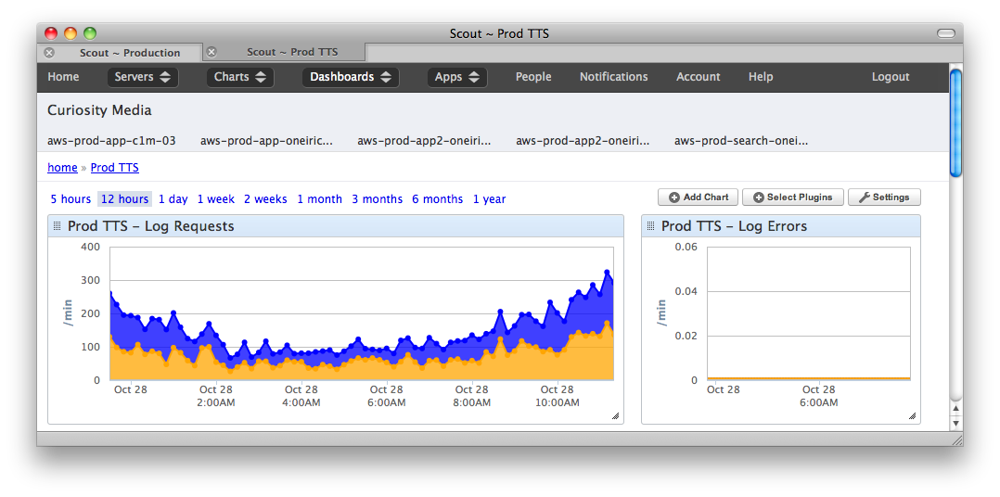

The Solution
A node.js app.
- Ryan and Chris assert: Node.js can do this.

-
Me: OK.
-
Thus was born cicero.
Teaching a language means teaching pronunciation.
Users want to learn how to pronounce arbitrary text.
We have a command-line text-to-speech (TTS) application.
But our legacy PHP app to generate audio is broken.
Me: OK.
Thus was born cicero.
Taking in a string and:
In other words, slinging data. Node can do that really well.
It needs to be quick and stable.
It needs to serve ~500 requests/minute.
Install is easy. Check nodejs.org for instructions.
$ brew install node
Recommended: Install NVM (Node version manager).
Node has lots of third-party packages.
Available via Node package manager (NPM).
First, specify dependencies in package.json:
"dependencies": {
"config": "0.4.15",
"express": "3.x",
"underscore": "1.3.3",
"deep-extend": "0.2.2",
"validator": "0.4.10",
"winston": "0.6.2"
},
"devDependencies": {
"coffee-script": "1.3.3",
"jshint": "0.7.1",
"coffeelint": "0.4.0"
}
node_modules:$ npm installrequire allows importing third-party packages into our code.
require'ing is very simple:
express = require "express"
Modules are just js files.
utils = require "./common/utils"
// JavaScript # CoffeeScript
fn = function (args) { fn = (args) ->
return args; args
};
var obj = { obj =
key: value key: value
};
Grunt: watch, test, server.
REPL? Eh.
node-config provides per-environment config.
In cicero/config:
default.js, development.js, production.jsnode-config chooses based on NODE_ENV environment variable.Sample:
module.exports =
app:
addr: "0.0.0.0"
port: 8004
tts:
input:
maxChars: 200
languages:
available: ["en", "es"]
Express (HTTP framework) and Connect (middleware) and provide:
express = require 'express'
app = express()
app.get '/audio', (req, res) ->
# Process request...
# When finished, send response:
res.send 200, responseData
middle = (req, res, next) ->
# Process request...
# When finished, move on to next middleware:
next()
Really up to you. Here's our project layout:
/cicero
|-config
| |--default.js
| |--development.js
|-docs
|-lib
| |--server
| |--index.js
| |--tts.js
|-node_modules ...
|-src
|-config
| |--default.coffee
| |--development.coffee
|-server
|--index.coffee
|--tts.coffee
index.coffee
tts.coffee
TtsArgsTtsExecTtsCachetts.coffee exposes middleware functions (signature is (req, res,
next)):
module.exports =
parseArgs: TtsArgs.parse
searchCache: TtsCache.search
exec: TtsExec.exec
In index.coffee:
tts = require "./tts"
# ...
middle = [log, tts.parseArgs, tts.searchCache, tts.exec]
app.get "/audio", middle
I started cicero doing filesystem operations with sync methods like
fs.openSync.
But why is that a problem?
Node is single-threaded.
Anything that blocks can halt the entire process.
First async paradigm.
fs.open path, 'r', (err, file) ->
# In callback function.
# Handle error if err is non-null:
handleError err if err
# Otherwise, everything went ok, and we can do something
# with file now that it's ready...
Second async paradigam.
# Create our process object.
ttsProcess = spawn 'tts_command', args, options
# Listen for error event.
stderr = ""
ttsProcess.stderr.on "data", (data) ->
# Accumulate data from stderr.
stderr += data
# Listen for exit event.
ttsProcess.on "exit", (code) ->
# Check errors, exit.
if stderr or code isnt 0
return new Error(stderr ? "TTS failed")
Stream audio file to HTTP response (res) and S3 cache (s3Stream):
# Get readable stream reference to audio file.
fileStream = fs.createReadStream tmpAudioFile
# res is our HTTP response object, and it's a writeable stream.
# s3Stream is our writeable stream to Amazon S3.
# Let the streaming begin!
fileStream.pipe(res)
fileStream.pipe(s3Stream)
# Listen for error events.
fileStream.on "error", errHandle
s3Stream.on "error", errHandle
# Cleanup on end event.
fileStream.on "end", ->
# Do cleanup (delete tmpAudioFile)
Gain visibility into what your app is doing.
{
"date": "2012-10-28T15:17:02.513Z",
"level": "info",
"env": "production",
"type": "server",
"addr": "0.0.0.0",
"port": 2003,
"vers": "v0.8.9",
"deploy": "cicero",
"message": "Server started on port 2003."
}

@williamjohnbert
SpanishDict is hiring! spanishdict.com/careers
/
#